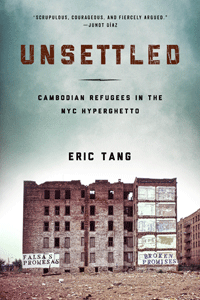

<body bgcolor="#FFFFFF" text="#000000" link="#0000FF" vlink="#CC0000" alink="#CC0000"><center><hr width="350" size="1" align="center" noshade>Why Cambodian refugees experience life in the U.S. as a form of captivity, since self-sufficiency remains an elusive goal<hr width="350" size="1" align="center" noshade><p><a href="https://cdcshoppingcart.uchicago.edu/Cart/ChicagoBook.aspx?ISBN=9781439911648&&PRESS=temple" target="_top">Buy this book!</a> | <a href="https://cdcshoppingcart.uchicago.edu/Cart/Cart.aspx?PRESS=temple" target="_top">View Cart</a> | <a href="https://cdcshoppingcart.uchicago.edu/Cart/Cart.aspx?PRESS=temple" target="_top">Check Out</a></p><p></p></center><!--none//--><h1>Unsettled</h1>
<H2>Cambodian Refugees in the New York City Hyperghetto</H2>
<h3>Eric Tang</h3>
<P>cloth 1-4399-1164-9 $78.50, Sep 15, <FONT COLOR=#990033>Available</FONT>
<br>paper 1-4399-1165-7 $24.95, Sep 15, <FONT COLOR=#990033>Available</FONT>
<br>Electronic Book 1-4399-1166-5 $24.95 <FONT COLOR=#990033>Available</FONT>
<BR> 234 pp
5.5 x 8.25
10&nbsp;halftones
</P><BLOCKQUOTE><I>"Scrupulous, courageous and fiercely argued, </i>Unsettled<i> is an ethnographic
revelation. . . . Tang, a former organizer, brings to light the political ecology of a community that has survived war, genocide, and displacement and is now struggling to remake the Bronx hyperghetto, exposing in the process the ‘impossible’ condition that may be the fate of all refugee communities in the neoliberal city."</i> <br>&#151<b>Junot Díaz,</b> author of <i>The Brief Wondrous Life of Oscar Wao</i></I></BLOCKQUOTE>
<P>After surviving the Khmer Rouge genocide, followed by years of confinement to international refugee camps, as many as 10,000 Southeast Asian refugees arrived in the Bronx during the 1980s and ‘90s. <I>Unsettled</I> chronicles the unfinished odyssey of Bronx Cambodians, closely following one woman and her family for several years as they survive yet resist their literal insertion into concentrated Bronx poverty.
<P>Eric Tang tells the harrowing and inspiring stories of these refugees to make sense of how and why the displaced migrants have been resettled in the “hyperghetto.” He argues that refuge is never found, that rescue discourses mask a more profound urban reality characterized by racialized geographic enclosure, economic displacement and unrelenting poverty, and the criminalization of daily life.
<P><I>Unsettled</I> views the hyperghetto as a site of extreme isolation, punishment, and confinement. The refugees remain captives in late-capitalist urban America. Tang ultimately asks: What does it mean for these Cambodians to resettle into this distinct time and space of slavery’s afterlife?
<BR>&nbsp;<h2>Excerpt</h2><P>Excerpt available at <a href="http://www.temple.edu/tempress">www.temple.edu/tempress</a></p>
<BR>&nbsp;<h2>Reviews</h2>
<p><i>“Scholar-activist Eric Tang has written a brilliantly moving account of how politics, community dynamics, and family relationships shape life for Cambodian refugees who settled in the Bronx in the 1980s and 1990s. </i>Unsettled<i> is at once a stunning ethnography, a superb critical cultural studies project, and an outstanding example of engaged scholarship that will inspire new understandings about the movement of people and the creation of particular kinds of contested spaces. Tang’s riveting account of struggle, change, and resistance is a remarkable achievement.”—</i> <br>&#151<b>Beth Richie</b>, Professor of African American Studies and Criminology, Law and Justice at University of Illinois at Chicago
<p><i>“</i>Unsettled<i> is a contribution to the emergent field of ‘critical refugee studies,’ and documents a story of Cambodian refugee itinerancy and survival. Not an account of a transition from refugee hardship to redemptive U.S. citizenship, it is rather a description of uprooting, captivity, poverty, displacement, and fugitivity—and the ever elusive project of ‘arrival.’”—</i> <br>&#151<b>Lisa Lowe</b>, Professor of English and American Studies at Tufts University
<p><i>"Tang calls </i>Unsettled<i> a work of activist scholarship. It is also a reflexive, sociological account from a community organizer/academic that is interested in how researchers and respondents negotiate this relationship. There are therefore different entry points into this book, whether readers are interested in urban dysfunction, ethnic studies, the Cambodian diaspora, or the intersection of research and activism... </i>Unsettled<i> also provides insight into the Cambodian population in New York, whose experiences diverged from those of other Asian groups in the US."</i> <br>&#151<b><i>Environment & Urbanization</i></b>
<p><i>"The book contributes to the debate about the extent of socioeconomic advancement by Southeast Asian refugees in the US. Tang argues that these refugees experience the same extreme inequality as African Americans. The book supports this argument with a riveting, cinematic account of the hardships experienced by one Cambodian woman and her children.... Summing Up: Recommended."</i> <br>&#151<b><i>Choice</i></b>
<p><i>"Researching and writing </i>Unsettled<i>, Eric Tang could not have predicted the 2015 refugee crisis, which makes his work oh so timely. Tang spent fifteen years as a community organizer in the Northwest Bronx’s refugee neighborhoods, and his experiences permeate the pages of the book. Importantly, though, the knowledge produced through this political engagement with the subject matter only intensifies the bite of his research. The book offers readers an evocative look into an earlier refugee crisis, that of the thousands of people who fled Cambodia at the conclusion of the Southeast Asian War.... </i>Unsettled<i> describes and sharply analyzes how Bronx Cambodians fared, while closely following one woman and her family for several years as they make their way in what the author calls the </i>hyperghetto<i>."</i> <br>&#151<b><i>Journal of Sociology and Social Welfare</i></b>
<p><i>"This riveting ethnography draws on Tang's field notes from his years as a youth organizer in the northwest Bronx's refugee neighborhoods and his extensive interviews over three years with one Cambodian woman, Ra Pronh.... [Tang] concludes that for Cambodian refugees arrival is always an elusive project. A brilliant and moving account of Cambodian life, </i>Unsettled<i> bridges multiple areas of study and will appeal to readers interested in African American studies, Asian American studies, refugee studies, and urban studies."</i> <br>&#151<b><i>Journal of American History</i></b>
<p><i>"Eric Tang’s important book, </i>Unsettled<i>, provides a timely examination of U.S. refugee policy and its devastating impact on Cambodian refugees.... Tang does an excellent job of putting a resilient human face to... grim statistics.... </I>Unsettled<I> should be required reading in colleges across the nation for the important questions it raises about U.S. policy toward refugees."</i> <br>&#151<b><i>Asian Affairs</i></b>
<p><i>"Tang assembles a thorough attack against US socioeconomic governance, interwoven with excerpts from interviews with [Ra] Pronh and her children that took place over five years.... By offering diverse interdisciplinary methodologies, Tang...add[s] to academic conversations surrounding post-genocide memory but also stress[es] that such scholarship depends on the construction of the archive so as to privilege refugee experience and a commitment toward actively remembering in the face of traumatic and political forgetting."</i><br>&#151<b><i>MELUS</i></b>
<p><i>"What distinguishes Tang’s account is his argument that the plight of the [Cambodian] refugees resulted not from a humanitarian effort that went terribly wrong, 'a major programmatic failure'; rather it developed from the continuation of 'a long, unresolved colonial and imperial project carried out by the United States in Southeast Asia, a white supremacist project'.... </i>Unsettled<i> is worth reading for what it tells us about Cambodian refugees in the Bronx."</i><br>&#151<b><i>American Historical Review</i></b>
<p><i>"[A]n important contribution to the literature on Southeast Asian refugees in the United States.... Tang is writing against earlier work on refugees in the United States, which focused on cultural groups without giving adequate consideration to the context where they were resettled. Indeed this is the key contribution of the book.... Tang’s book helps flesh out our understanding of the lives of Cambodians in the United States."</i><br>&#151<b><i>Refuge: The Canada's Journal on Refugees</i></b>
<BR>&nbsp;<H2>About the Author(s)</H2>
<P><b>Eric Tang</b> is Assistant Professor of African and African Diaspora Studies and a faculty member in the Center for Asian American Studies at The University of Texas at Austin.</P>
<BR><H2>Subject Categories</H2>
<p><A HREF="/tempress/american.html" TARGET="_top">American Studies</a>
<BR><A HREF="/tempress/asian_amer.html" TARGET="_top">Asian American Studies</a>
<BR><A HREF="/tempress/immigration.html" TARGET="_top">Immigration Studies</a>
</p>
<BR><h2 class="inpageheading">In the series</H2>
<P><I><a href="http://www.temple.edu/tempress/asam_history.html" onMouseOver="window.status='Click for other books in this series!'; return true;" onMouseOut="window.status=''; return true;" target="_top">Asian American History and Culture</a></i>, edited by Cathy Schlund-Vials, Rick Bonus, and Shelley Sang-Hee Lee.
</p><p>Founded by Sucheng Chan in 1991, the <I>Asian American History and Culture</I>, series has sponsored innovative scholarship that has redefined, expanded, and advanced the field of Asian American studies while strengthening its links to related areas of scholarly inquiry and engaged critique. Like the field from which it emerged, the series remains rooted in the social sciences and humanities, encompassing multiple regions, formations, communities, and identities. Extending the vision of founding editor Sucheng Chan and emeriti editor Michael Omi, David Palumbo-Liu, K. Scott Wong and Linda Trinh Võ, series editors Cathy Schlund-Vials, Rick Bonus, and Shelley Sang-Hee Lee continue to develop a foundational collection that embodies a range of theoretical and methodological approaches to Asian American studies.</p>
<p align="center"><a href="https://cdcshoppingcart.uchicago.edu/Cart/ChicagoBook.aspx?ISBN=9781439911648&&PRESS=temple" target="_top">Buy this book!</a> | <a href="https://cdcshoppingcart.uchicago.edu/Cart/Cart.aspx?PRESS=temple" target="_top">View Cart</a> | <a href="https://cdcshoppingcart.uchicago.edu/Cart/Cart.aspx?PRESS=temple" target="_top">Check Out</a></p><p><font face="Arial" size="1"><a href="copyright.html" onMouseOver="window.status='Web Copyright Policy';return true;" onMouseOut="window.status=''" title="Web Copyright Policy">&copy;</a> 2016 <a href="http://www.temple.edu" target="new" onMouseOver="window.status='Link to Temple University home page';return true;" onMouseOut="window.status=''" title="Link to Temple University home page">Temple University</a>. All Rights Reserved. http://www.temple.edu/tempress/titles/2333_reg.html</font></p>